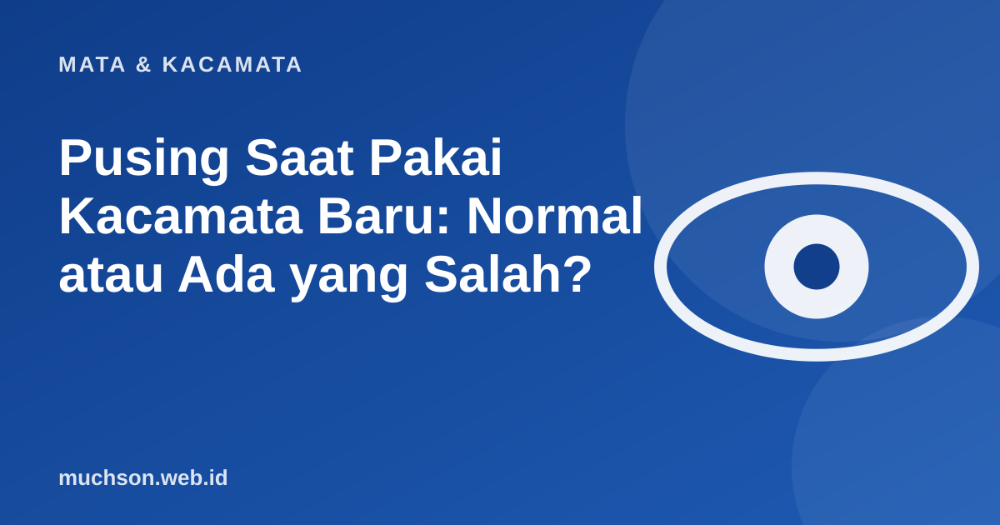

Beranda › Artikel › Mata & Kacamata
Mata & KacamataPusing Saat Pakai Kacamata Baru: Normal atau Ada yang Salah?
Ini salah satu keluhan paling umum setelah mengambil kacamata baru. Sering kali normal dan hilang sendiri dalam beberapa hari. Tetapi ada juga yang menandakan masalah pada resep atau pemasangan, jadi perlu tahu bedanya.

Mengapa pusing bisa terjadi?
Otak sudah terbiasa dengan cara melihat Anda yang lama, termasuk bila penglihatan Anda sebelumnya tidak terkoreksi sempurna. Ketika ukuran lensa berubah, otak butuh waktu menyesuaikan. Perubahan silinder, sumbu, atau lensa progresif biasanya paling terasa. Bentuk frame dan jarak lensa dari mata juga memengaruhi tampilan.
Normal atau tidak? Periksa tabel ini
| Keluhan | Biasanya normal? | Bila berlanjut |
|---|---|---|
| Pusing ringan, lantai terasa melengkung | Ya, 1-2 minggu pertama | Kembali ke optik bila lebih dari dua minggu |
| Garis lurus tampak miring | Ya, terutama pada silinder baru | Periksa sumbu silinder dan pemasangan |
| Mual atau pusing hebat | Tidak | Hentikan pemakaian dan periksa segera |
| Satu mata terasa jauh lebih buram | Tidak | Periksa resep dan pemasangan |
| Sulit melihat ke samping pada progresif | Ya, bagian dari adaptasi | Periksa tinggi lensa bila berlanjut |
Cara mempercepat adaptasi
- Pakailah kacamata baru terus-menerus, jangan bergantian dengan yang lama.
- Jalan di tempat datar dahulu sebelum menaiki tangga.
- Hindari mengemudi jauh di hari-hari pertama bila masih pusing.
- Pastikan frame pas dan tidak melorot.
- Bersihkan lensa; kotoran memperburuk kenyamanan.
- Bila lebih dari dua minggu belum nyaman, kembali ke optik.
Jangan "memaksa" memakai kacamata yang tetap membuat pusing berhari-hari. Kembali ke optik, bawa kacamata dan resep. Pengecekan ulang pemasangan, jarak pupil, dan ukuran sering menyelesaikan masalah.